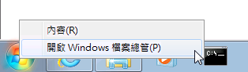
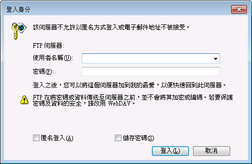
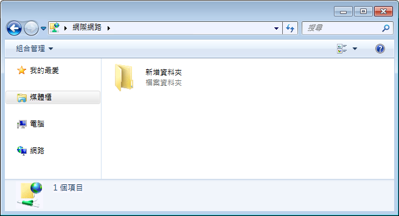

如何使用 FTP
Windows 使用者
在『開始』微軟圖示按「滑鼠右鍵」，點選『檔案總管』

並於『網址列』上，直接輸入 ftp://
，例如下圖，並按鍵盤『Enter』鍵。
出現『登入身分』後
在「使用者名稱」：輸入登入WMPro平台時所使用的帳號
在「密碼 」：輸入登入的密碼，或『教材上傳』畫面所提供的『動態密碼』
並點選『登入』

登入後，就會出現下圖畫面，顯示課程內的教材檔案

注意事項
您必須先登入學習網站，並進入課程的『教師辦公室』中，在點選『課程管理』的『教材上傳』，必須停留在此，才能使用FTP軟體上傳檔案到課程之中；若您尚未登入學習網站，只開啟FTP軟體，是無法用FTP上傳教材的。
您以FTP登入的路徑將會是您目前所在的課程教材目錄，若要將教材上傳到其他課程，請先關閉開啟FTP連線中的『檔案總管』，再切換到其他課程『教師辦公室』中的『教材上傳』，重新進行FTP連線即可。